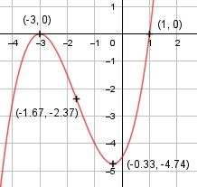

Aufgabe 31 f(x) = 0,5x3 + 2,5x2 + 1,5x - 4,5 f'(x) = 1,5x2 + 5x + 1,5, f''(x) = 3x + 5, f'''(x) = 3 Definitionsbereich: -∞ < x < ∞ Wertebereich: -∞ < f(x) < ∞ Asymptoten: - Symmetrie: - Nullstellen: 0,5x3 + 2,5x2 + 1,5x - 4,5 = 0 | :0,5 x3 + 5x2 + 3x - 9 = 0 Durch Probieren gefunden x = 1. Hornerschema: 1 5 3 - 9 x1 = 1 1 6 9 --------------------------- 1 6 9 0 Polynomdivision: 0,5x3 + 2,5x2 + 1,5x - 4,5 : (x-1) = 0,5x2+3x+2 -(0,5x3 - 0,5x2) ------------------ 3x2 + 1,5x - 4,5 -(3x2 - 3x) ------------ 4,5x - 4,5 -(4,5x - 4,5) ------------- 0 x2 + 6x + 9 = 0 p, q - Formel: p = 6, q = 9 x2,3 = x2,3 = -3 ± x2,3 = -3 ± x2,3 = - 3 (Berührpunkt, Extrempunkt) N1,2(-3|0), N3(1|0) Schnittpunkt mit der y-Achse: f(0) = 0,5 * 03 + 2,5 * 02 + 1,5 * 0 - 4,5 = -4,5 Sy(0|-4,5) Extrempunkte: 1,5x2 + 5x + 1,5 = 0 A, B, C - Formel: A = 1,5, B = 5, C = 1,5 x1,2 = x1,2 = x1,2 = -5 ± 4 x1,2 = --------- 3 x1 = -(1/3) f(-1/3) = 0,5 * (-1/3)3 + 2,5 * (-1/3)2 + + 1,5 * (-1/3) - 4,5 = -4,74 x2 = - 3, f(-3) = 0 f''(-1/3) = 3 * -(1/3) + 5 > 0 --> Tiefpunkt ((-1/3)|-4,74) f''(-3) = 3 * (-3) + 5 < 0 --> Hochpunkt (-3|0) Wendepunkte: 3x + 5 = 0 |- 5 3x = - 5 | :3 x = - (5/3) f(-5/3) = 0,5 * (-5/3)3 + 2,5 * (-5/3)2 + + 1,5 * (-5/3) - 4,5 = -2,37 f'''(-5/3) ≠ 0 --> Wendepunkt ((-5/3)|-2,37) Graph:
